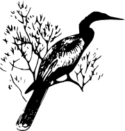
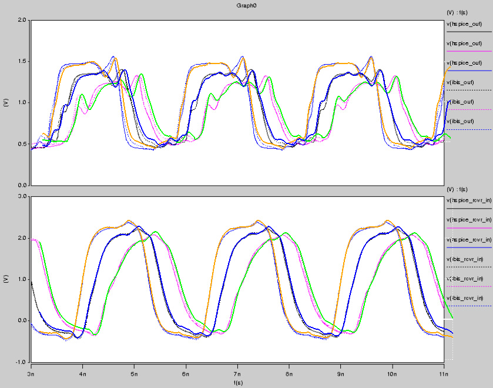

Darter - SPICE based IBIS modelling tool
Darter is very much a work in progress. It currently utilizes gEDA gschem
for SPICE netlisting, Python to create SPICE library files, and ngspice for
simulation. The choice of Python and ngspice are primarily to get the project
going.
Download: https://gitorious.org/darter
The basic workflow is:
- Build ibis_*.inc files (make, utilizes gschem)
- Obtain a .ibs file from your vendor (eg, u69a.ibs)
- Build the associated .lib file (make u69a.lib)
- Create a schematic using the proper IBIS components:
- Check in your .ibs file to see what [Model]'s are available
- Create a 'SPICE directive' with a .lib line for that [Model] (.lib u69a.lib DQ_FULL_533)
- Select the gschem IBIS symbol associated with the Model_type
- Fill in the in the symbol value attribute (DQ_FULL_533)
- Optionally add spec=-1/0/1 for slow, typ, and fast respectively
- Optionally prefix model name with package name and '_' for package modelling
- Optionally suffix model name with '_' and pin name or signal name for package modelling
- eg: MT47H128M16U69A_DQ_FULL_533_DQ14 spec=1
- Connect up a stimulus to the IN and EN pins if applicable
- Connect up the power and ground rails
- Connect together various models as in your own design
- Create a SPICE netlist from your schematic (gnetlist -g spice-sdb -o example.net example.sch)
- Load the netlist in ngspice (ngspice example.net)
- Run as appropriate (tran 1p 60n)
- Plot the output (aka, go nuts)
Currently unsupported:
- Driver Schedules
- External Models/circuits
- ECL
- ISSO PU/PD data
- Composite current for rising/falling waveforms
- Bus hold
- Fall back
- Series models
- Comment char changes
- Model specs/receiver thresholds
Current limitations:
- darter.py can generate thousands of subcircuits for some IBIS files,
ngspice has a hardcoded limit of 1000 subcircutis. I'm not sure if the best
workaround is to patch ngspice, or modify darter.py to split up its output.
- Output buffers need two rising and falling waveforms each
- Open source/sink buffers need one rising and one falling waveform
- Ramp data is ignored
The below image shows an overlaid comparison of a Micron U69A HSPICE
model (solid grey, pink, blue), a Micron U69A IBIS model with existing
IBIS tool (dotted grep, pink, blue), and the output of the model generated
by darter.py (overlying solid orange, blue, and green)
